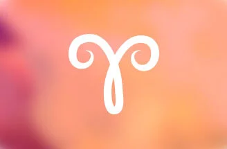

Koç Burcu
Ay bugün burcunuza ilerlerken kişisel konulara odaklanabilirsiniz.
Kendinizi daha güçlü bir şekilde ortaya koyabilir, cesur, girişimci, lider özelliklerinizi sergileyebilirsiniz.
Ay bugün burcunuza ilerlerken kişisel konulara odaklanabilirsiniz.
Kendinizi daha güçlü bir şekilde ortaya koyabilir, cesur, girişimci, lider özelliklerinizi sergileyebilirsiniz.
Ay akşam saatlerinde burç değiştirirken kontrolünüz dışı gelişme ve olaylara bugün her zamankinden çok dikkat etmeniz gerekebilir.
Dalgınlık, sakarlık ve unutkanlığa karşı uyanık olmalı, arkanızı daha fazla kollamalısınız.
Ay akşam saatlerinde burç değiştirirken sosyal bir gün geçirebilir, arkadaşlarınızla bir araya gelebilirsiniz.
Düşünce ve fikirlerinizi ortaya koyarken duygularınızı paylaşmaktan çekinmeyeceğiniz bir gün olabilir.
Ay akşam saatlerinde burç değiştirirken iş hayatınız ve kariyerinizle ilgili konular gündeminize gelirken yöneticilerinizle, otorite konumunda kişilerle bir araya gelebilirsiniz.
Görev ve sorumluluklarınızın bilincinde hareket edebilirsiniz.
Ay akşam saatlerinde burç değiştirirken özgür ve bağımsız hareket etmek, bulunduğunuz ortamın dışına çıkmak, uzaklaşmak isteyebilirsiniz.
Yabancılar, yurt dışı bağlantılı konular ve seyahatler gündeminize gelebilir.
Ay akşam saatlerinde burç değiştirirken ortak maddi konular, paylaşımlar sizi duygusal açıdan çalkantılı olabilecek durumlara sürükleyebilir.
Duygularınızı bastırmaktan uzak durmalı, stres ve gerilimi kontrol edebilmelisiniz.
Ay akşam saatlerinde burç değiştirirken ikili, bire bir ilişkiler, evlilik ve ortaklık konularında hareketli bir gün geçirebilirsiniz.
Karşılıklı uyum, denge ve adaleti koruma peşinde olabilirsiniz. Yalnız kalmak istemeyebilirsiniz.
Ay akşam saatlerinde burç değiştirirken günlük işler, çalışma ortamınızın koşulları bazı fedakarlıkları beraberinde getirebilir, duygusal, merhametli bir tutum izleyebilirsiniz.
Detaylara her zamankinden fazla dikkat etmelisiniz.
Ay akşam saatlerinde burç değiştirirken aşk hayatınızla ilgili gelişmeler bugün gündeminizi belirleyebilir.
Sevdiklerinizle ilgilenmek ve onlara yakın olmak isteyebilirsiniz. Heyecan ve tutkularınızı gizlemeyeceğiniz bir gün olabilir.
Ay akşam saatlerinde burç değiştirirken ev ve aile yaşamınızla ilgili konular gündeme gelirken eşinizden, sevgilinizden destek görebilirsiniz.
Evinizle ilgili işleri halledebilir, dekorasyon, tadilat, tamirat gibi konularla ilgilenebilirsiniz.
Ay akşam saatlerinde burç değiştirirken iletişim açısından hareketli, verimli bir gün geçirebilirsiniz. Duygularınızı yakın çevrenizle paylaşabilirsiniz.
İletişim, haberleşme, görüşme ve kısa yolculuklarda esneklik ve hareketliliğinizi ortaya koyabilirsiniz.
Ay akşam saatlerinde burç değiştirirken iş ve para konuları ve maddi konular bugün gündeminizi belirleyebilir.
Harcama ve alışverişlerinizde bütçenizi gözetmeyi, kaynaklarınızdan doğru yararlanmayı ihmal etmemelisiniz.